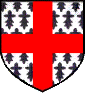

retour à la famille de la Bonde

DOCUMENTS DIVERS NON PUBLIÉS
TITRES de la VAVASSORIE de LAUNEY à VILLIERS-FOSSARD
Référence : Bibliothèque
de l'Arsenal, manuscrit 3916 (274 H.F.),
microfilmé en 1
Mi 218, "Inventaire
général de tous les titres,
papiers et documens concernants la terre et chatellenie de
Coulombières
et les terres et seigneuries de Bricqueville et Bernesq qui sont dans
les archives du château de Coulombières, fait et
dressé par
François-Raphaël Onfroy, procureur en
l'élection de Bayeux. 1745"
Provenance : Archives
Départementales de
Saint-Lô
n°2 du 5e paquet, fief ou vavassorie de Launay,
situé à Villiers Fossard, contenant 41 ares
10° Un extrait sur papier et collationné d'un
contrat de
vente faite par lad[ite] Damoiselle Jeanne le Couey veuve de Jean de
Creully, ecuyer, sieur de Saint Clair à Me Pierre de la Bonde
des Clos guillot et Varollieres situés à Villiers
Fossard du quatorze septembre 1638.